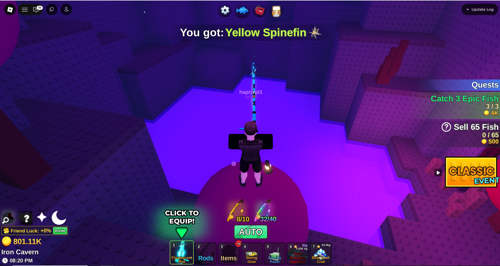

Percobaan
Percobaan 2
Percobaan3
Percobaan4
Percobaan5
Percobaan6

Percobaan Paragraf 2
Bold
Ini Italic
Ini Underline
Strong
Ini Empeshize
test
Pargraf 1
paragraf 2
Pantun adalah puisi lama yang terdiri dari empat baris
yang
Pantun adalah puisi lama yang terdiri dari empat baris
dalam setiap baitnya, dengan rima a-b-a-b.
Dua baris pertama disebut sampiran, dan dua baris
terakhir adalah isi. Berikut adalah beberapa contoh
pantun berdasarkan berbagai kategori
baris pertama disebut sampiran, dan dua baris
terakhir adalah isi. Berikut adalah beberapa contoh
pantun berdasarkan berbagai kategori